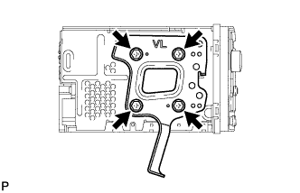

РАДИОПРИЕМНИК > СНЯТИЕ |
| 1. ОТСОЕДИНИТЕ ПРОВОД ОТ ОТРИЦАТЕЛЬНОГО ВЫВОДА АККУМУЛЯТОРНОЙ БАТАРЕИ |
| 2. СНИМИТЕ ИНТЕГРИРОВАННУЮ ПАНЕЛЬ УПРАВЛЕНИЯ В СБОРЕ |
 |
Освободите 4 фиксатора.
Отсоедините разъем и снимите интегрированную панель управления в сборе.
| 3. СНИМИТЕ ЛЕВУЮ ОТДЕЛОЧНУЮ НАКЛАДКУ ПАНЕЛИ ПРИБОРОВ (с нижней стороны) |
 |
Освободите 4 фиксатора и снимите крайнюю отделочную накладку панели приборов.
| 4. СНИМИТЕ ПРАВУЮ ОТДЕЛОЧНУЮ НАКЛАДКУ ПАНЕЛИ ПРИБОРОВ (с нижней стороны) |
 |
Освободите 4 фиксатора.
Отсоедините разъем и снимите крайнюю отделочную накладку панели приборов.
| 5. СНИМИТЕ ВЕРХНЮЮ ПЕРЕДНЮЮ ОБЛИЦОВКУ ПАНЕЛИ КОНСОЛИ (с нижней стороны) |
 |
Наклейте защитную ленту вокруг передней накладки верхней облицовки панели пола.
| *1 | Защитная клейкая лента |
Освободите 5 фиксаторов.
Отсоедините все разъемы и снимите переднюю накладку верхней облицовки панели пола.
| 6. СНИМИТЕ РАДИОПРИЕМНИК С КРОНШТЕЙНОМ В СБОРЕ (с нижней стороны) |
Выверните 4 болта.
Потяните радиоприемник, чтобы расцепить 3 фиксатора с обратной стороны радиоприемника.
Отсоедините разъемы и снимите радиоприемник.
| 7. СНИМИТЕ ЦЕНТРАЛЬНУЮ ОТДЕЛОЧНУЮ НАКЛАДКУ ПАНЕЛИ ПРИБОРОВ В СБОРЕ (с верхней стороны) |
 |
Освободите 10 фиксаторов.
Отсоедините разъем и снимите центральную отделочную накладку панели приборов.
| 8. СНИМИТЕ РАДИОПРИЕМНИК С КРОНШТЕЙНОМ В СБОРЕ (с верхней стороны) |
Выверните 4 болта.
Отсоедините разъемы и снимите радиоприемник.
| 9. СНИМИТЕ КРОНШТЕЙН РАДИОПРИЕМНИКА № 1 (с верхней стороны) |
Выверните 4 винта и снимите кронштейн.
| 10. СНИМИТЕ КРОНШТЕЙН РАДИОПРИЕМНИКА № 1 (с нижней стороны) |
Выверните 3 винта и снимите кронштейн.
| 11. СНИМИТЕ КРОНШТЕЙН РАДИОПРИЕМНИКА № 2 (с верхней стороны) |
|  |
Выверните 4 винта и снимите кронштейн.
| 12. СНИМИТЕ КРОНШТЕЙН РАДИОПРИЕМНИКА № 2 (с нижней стороны) |
Выверните 3 винта и снимите кронштейн.